外島旅遊景點
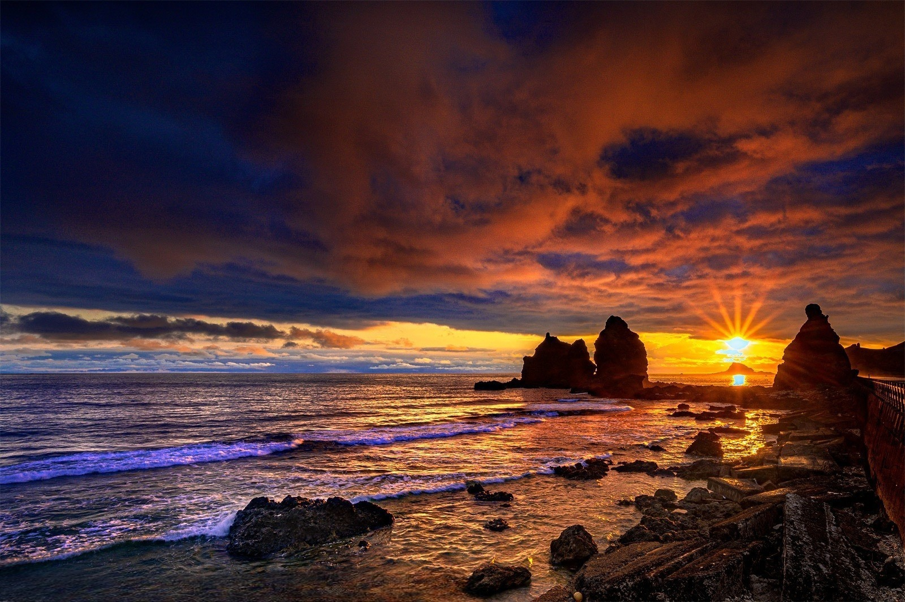
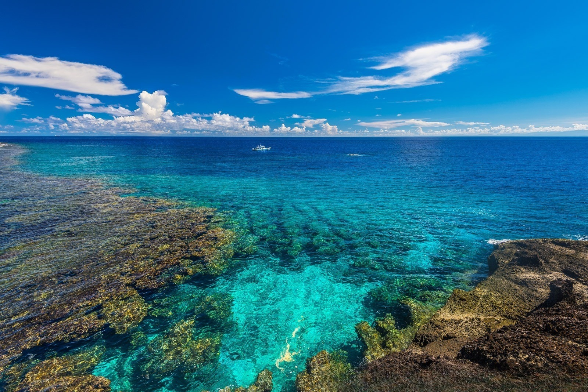
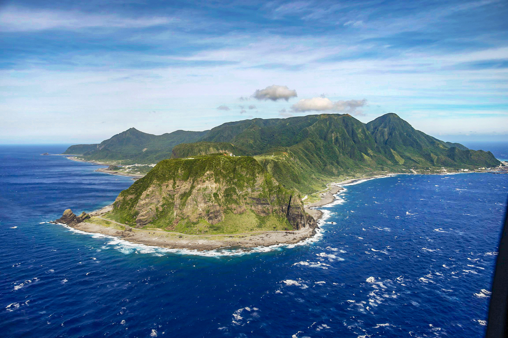
 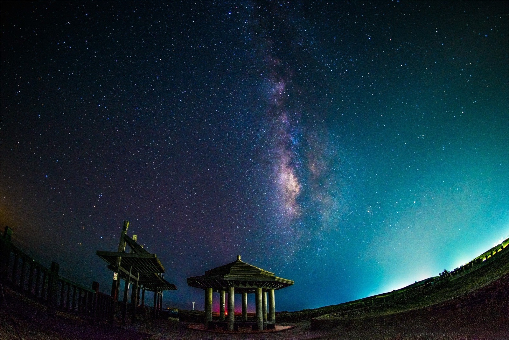
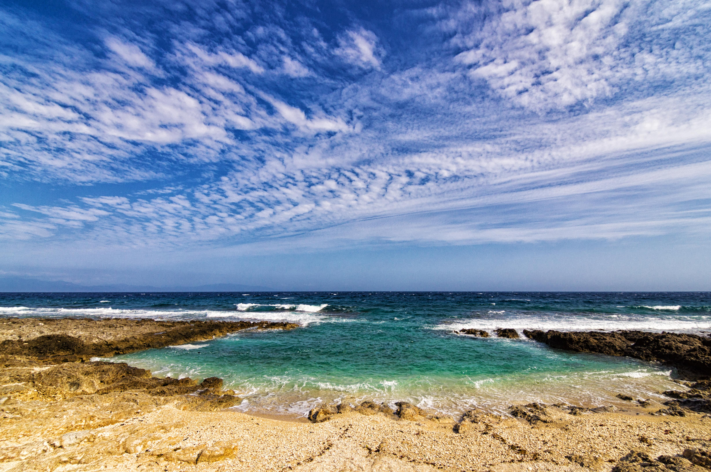
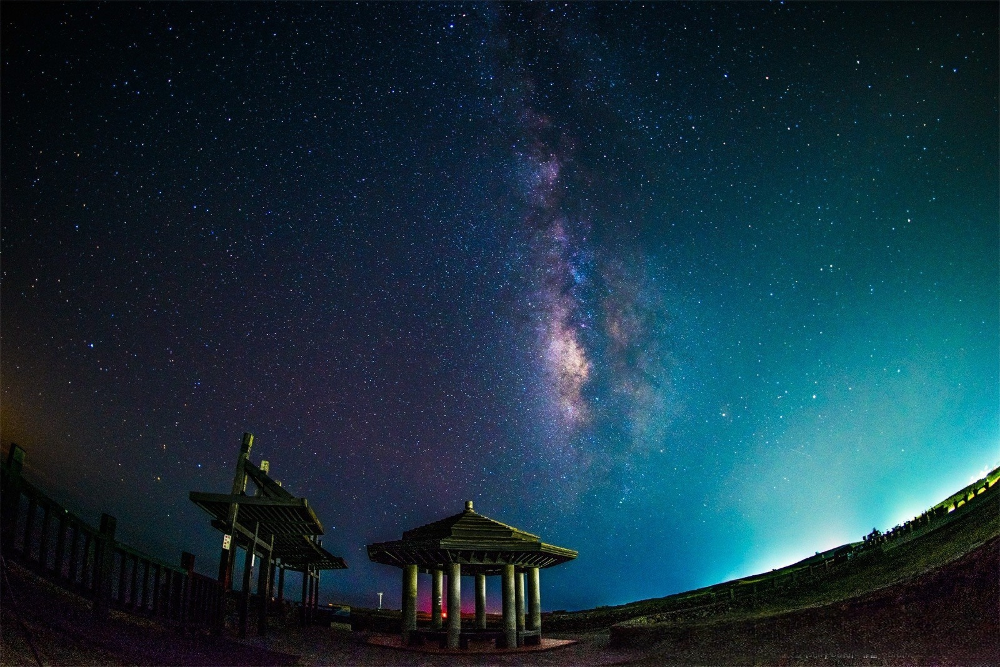
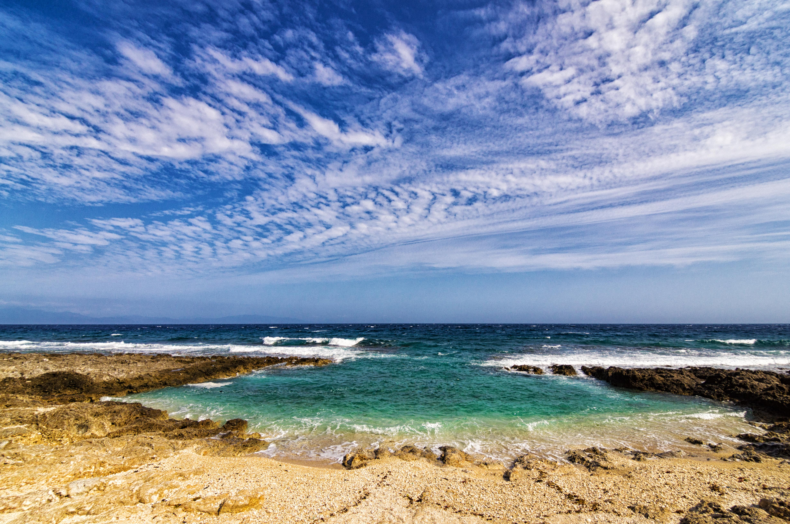
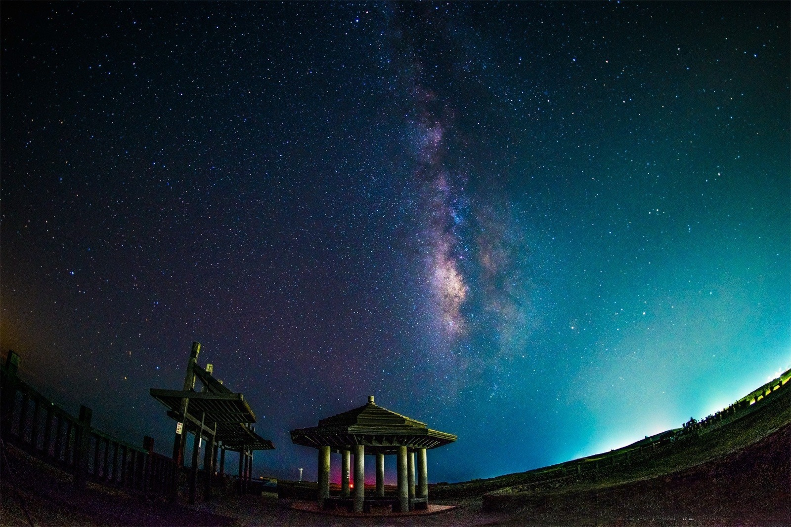
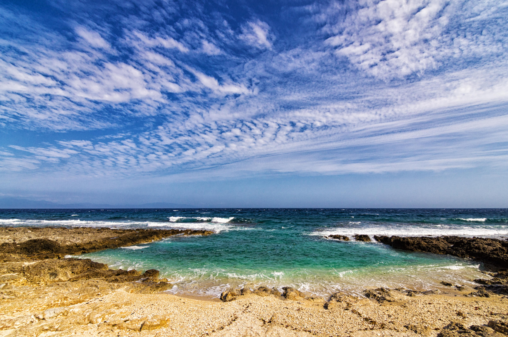
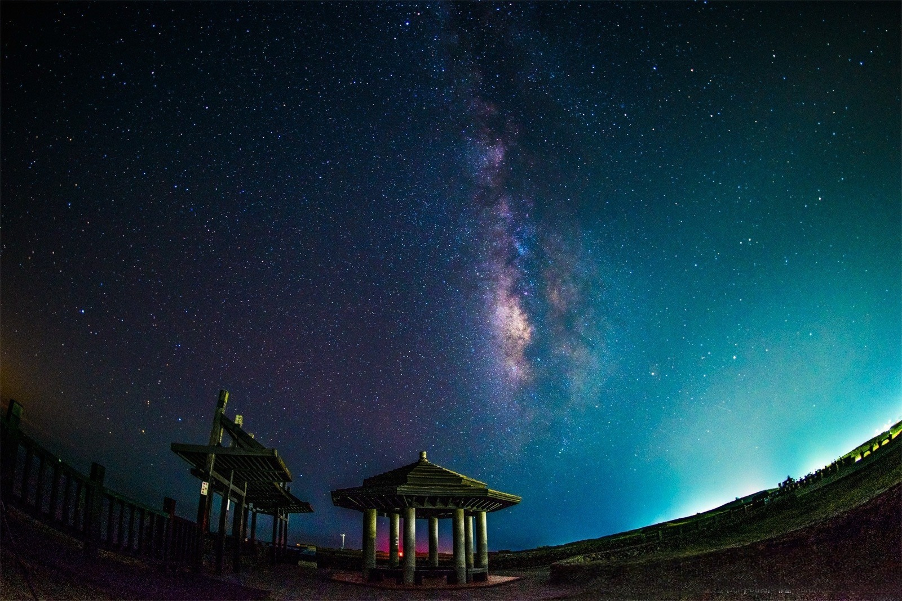
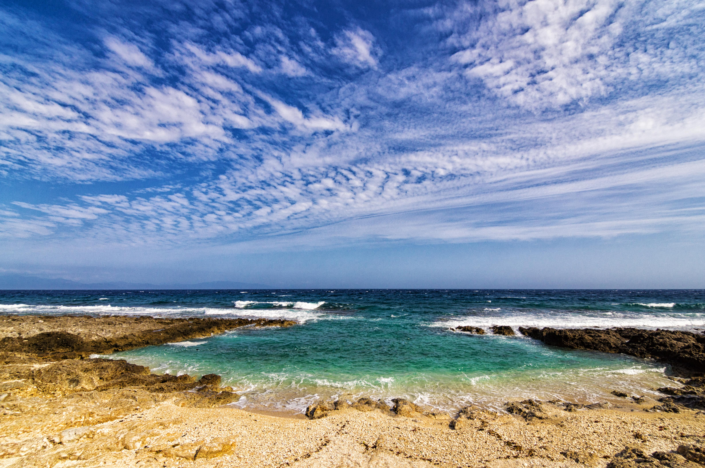
位於台灣本島與中國大陸之間的臺灣海峽上，是台灣的一個美麗的離島群。它由90多個島嶼組成，其中只有一小部分有人居住。澎湖以其碧海藍天、潔白的沙灘和壯麗的火山岩景觀而聞名，是一個受到台灣本島和國際旅行者歡迎的度假勝地。
澎湖的主要島嶼包括馬公市、七美、望安、白沙、西嶼、花嶼等。馬公市是澎湖的行政中心，也是最繁華的地方，有許多美食、文化和歷史景點。七美是澎湖最大的離島之一，以其潔白的沙灘和清澈的海水吸引了許多遊客。西嶼則以其特有的火山岩地形和壯觀的海蝕地貌聞名。
遊客來到澎湖可以享受各種水上活動，如浮潛、潛水、海釣等，也可以參觀歷史悠久的古蹟和文化景點，例如澎湖古城、觀音亭等。此外，澎湖也以其豐富的海鮮美食聞名，遊客可以品嚐到新鮮的海產料理，如海鮮火鍋、炸蚵仔等。
位於台灣東部海域，是一個風光秀麗、歷史悠久的小島。這個島嶼因其豐富的自然景觀和動人的故事而聞名於世。它以壯麗的海岸線、蔚藍的海水和多樣的海洋生物聞名，是潛水和浮潛的理想地點。此外，綠島也有壯觀的火山地形，如臺灣的象徵－燕子洞，以及其他令人驚歎的地質奇觀。
除了自然之美，綠島還有豐富的歷史文化遺產。在日治時期，綠島曾是一座監獄島，許多政治犯在此被囚禁。這段歷史為島嶼增添了厚重的人文色彩，吸引著許多遊客前來探訪，感受歷史的沉澱。
綠島的生態豐富多樣，植被茂密，有許多珍稀物種。在這裡，您可以欣賞到各種熱帶植物和珊瑚，還有許多瀕臨絕種的動物，如綠蠵龜等。
位於台灣東南方的太平洋上，是一個充滿原始美的環礁島嶼。這片風光旖旎的小島以其悠久的文化、多樣的生態和令人難以置信的海岸線而聞名於世。
蘭嶼是台灣原住民族達悟族的故鄉，他們保留著悠久的傳統文化和獨特的生活方式。遊客在蘭嶼可以欣賞到達悟族的原始舞蹈、祭祀儀式等文化表演，深入了解這個古老族群的歷史和生活。
此外，蘭嶼也是生態觀察者的天堂。這裡有茂密的原始森林、壯觀的瀑布、迷人的珊瑚礁和多樣的海洋生物。遊客可以在島上的各種生態導覽中，近距離觀察珍稀動植物，感受大自然的奧妙。
位於台灣西南方的熱帶島嶼，以其清澈的海水、多樣的海洋生態和壯麗的海岸景觀聞名於世。這個寧靜美麗的小島被譽為潛水者的天堂，擁有眾多令人嘆為觀止的潛水點，其中包括五色砂灘、美麗灣等，供遊客盡情探索。
小琉球不僅是潛水的熱門目的地，還有許多其他活動可供遊客參與，如浮潛、海釣、海灘漫步和觀賞夕陽等。島上還有豐富的海鮮料理可供品嚐，包括新鮮捕撈的海鮮，為遊客帶來美味的享受。
除了自然景觀和水域活動外，小琉球還擁有豐富的文化遺產。遊客可以參觀島上的石砲炮、了解漁船文化，還可以欣賞傳統的民俗表演，深入了解當地的歷史和文化。